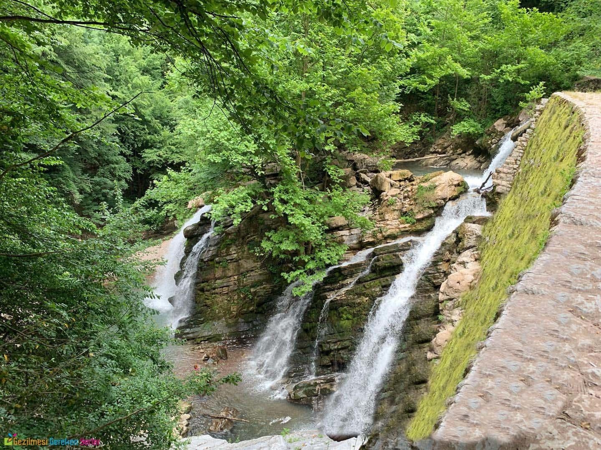
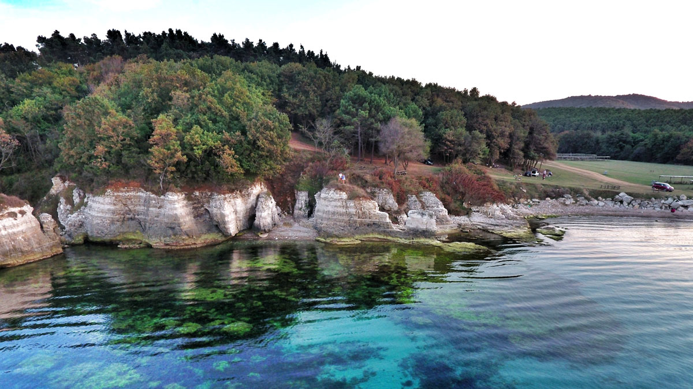
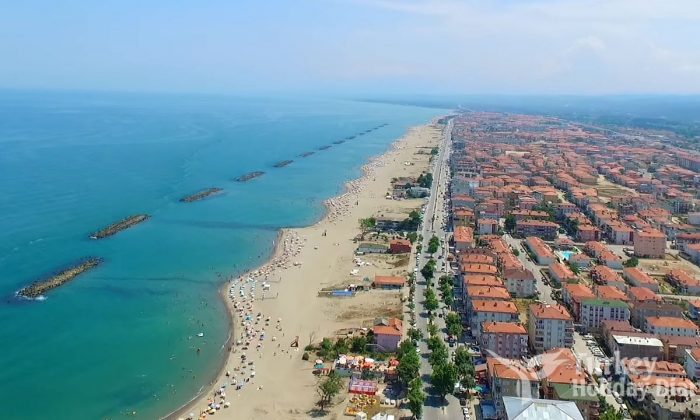
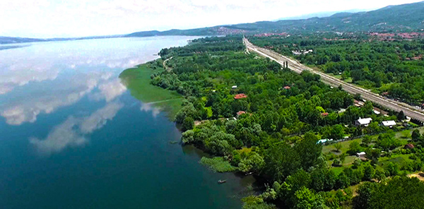

|




|
Doğal GüzelliklerSakarya ilinin başlıca doğal güzellikleri sıralayacak olursak; Sapanca Gölü, Akyazı Kaplıcaları, Sakarya İl Ormanları, Çiğdem Yaylası, Soğucak Yaylası, Poyrazlar Gölü, Yeni Mahalle(Sakarya nehri ağzı), Acarlar Longozu(Su basar orman), Maden Deresi ve eşsiz kumuyla alabildiğine Karadeniz sahilini sayabiliriz. Sakarya bu doğal güzellikleriyle hem doğa tutkunlarına muhteşem güzellikler sunmakta hem de şifalı kaplıcaları, nefes açan yaylaları ve kumuyla sağlık turizm açısından da potansiyel oluşturmaktadır. Bunların yanın da sayamadığımız daha bir çok güzelliği ile ziyaretçilerini bekleyen Sakarya’nın doğal zenginliği ilin turizm faaliyetlerinin büyük kısmını kapsar.Sapanca gölü, Bizans döneminden izler taşırken, göl kenarı ve tepelerde bulunan alabalık tesisleri ile muhteşem göl manzarasının yanında güzel damak tatları sunmaktadır. Yine Poyrazlar Gölü Mesire alanı doğayla iç içe keyifli piknik imkanları sunmaktadır. Maden deresine yöneldiğimizde tarihi kalıntıların arasından akan suyu ve tepelerdeki şelaleyi seyretmek için geldiğimiz bu yerde dinlenip piknik yapabileceğimiz mekanlar bizi karşılamaktadır. Akyazı’nın kuzuluk kaplıcalarında oluşturulan tesislerde bir çok rahatsızlığa şifa veren kaplıca sularından faydalanmak mümkün olmaktadır. Hendek’in yayları ise temiz havası ve mesire alanları ile tam bir doğa dopingi sağlar. |